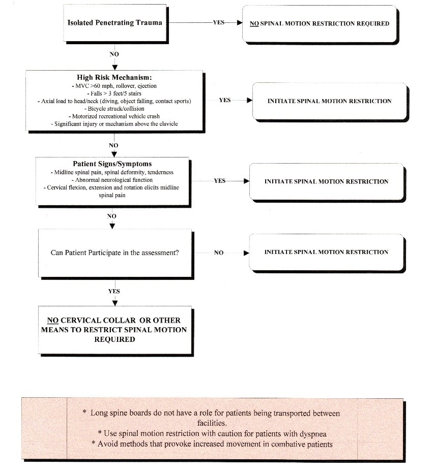
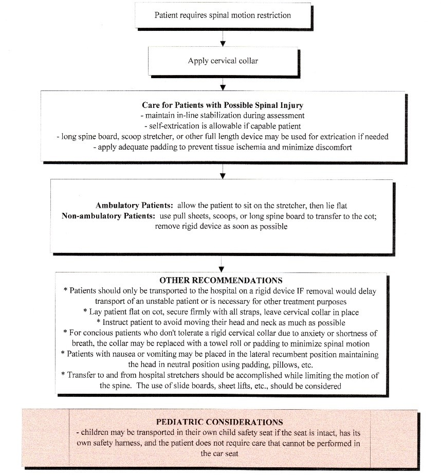

20.0 SPINAL INJURIES / SPINAL MOTION RESTRICTION
All Providers
- Assess scene to determine mechanism and risk of injury
- Higher Risk:
- Motor vehicles including motorcycles, ATVs, snowmobiles
- Diving accidents
- Severe injuries to the torso
- Falls > 10 feet
- Assess patient in position found, initial assessment focusing on need for cervical collar
application
mental status, neurologic deficits, spinal pain or tenderness, evidence of intoxication, other
injuries
- Treatment Plan
- Apply cervical collar if any of the following, post-trauma
- Neck pain or neck tenderness to palpation
- Abnormal mental status or neurologic deficit
- Alcohol or drug intoxication
- Severe or painful distracting injury
- Communication barrier inhibiting accurate assessment
- If none of these conditions apply, no cervical collar unless AEMT/Paramedic deem high risk
- Patients with penetrating trauma should NOT receive spinal immobilization
- Extrication
- Vehicle:
- after placing cervical collar if indicated, allow self-extrication if able
- infants and toddlers in remain in car seats
- Other situations: padded long board may be used for extrication, lift-slide technique
- Helmet removal: remove face mask if possible, followed by manual removal, keeping neck manually
immobilized. Apply occipital padding as needed to maintain neutral position
- Patients should not be routinely transported on long boards, unless the clinical situation warrants long
board use. Examples may be facilitation of immobilization of multiple extremity injuries. In
these circumstances the board should be well padded. Use a towel or pad to raise pediatric
patients’ body to insure appropriate spinal alignment. Age < 2 should be immobilized in a car
seat or age appropriate device.
- Assess neurological function before, during, and after application of spinal immobilization
Key Considerations
- Patients who are not likely to benefit from immobilization, and who have a low likelihood
of spinal injury, should not be immobilized
- Patients should be log rolled with spinal alignment for examination of the spine for
tenderness or deformities
- Ambulatory patients who are alert and cooperative may be safely immobilized on a cot
Pediatric Considerations
- Age < 2 should be immobilized in a car seat or age appropriate device
- Children < 5 years old should be immobilized with an appropriately sized cervical collar
or soft towels and tape. If attempts at immobilization result in more distress and
fighting to get free, then the immobilization should be minimized.
- Children < 8 years old cannot have their cervical spines reliably assessed in the field
and should have a cervical collar placed if the mechanism or physical exam warrants it.
Pediatric
not to exceed adult dose
EMT
AEMT
Paramedic

